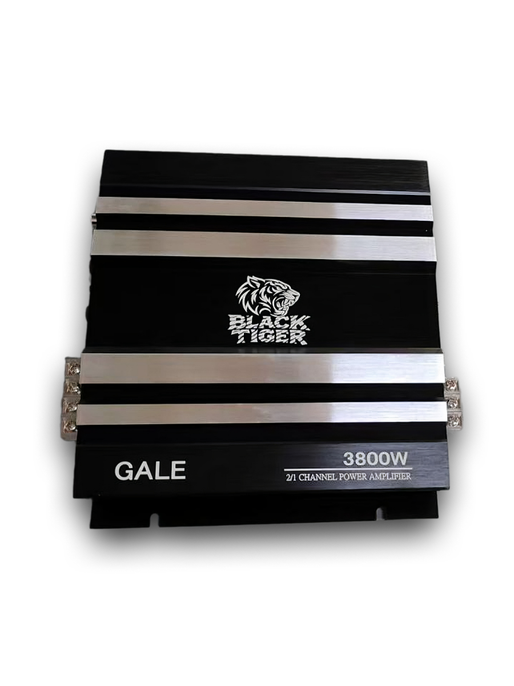

Автомобильные усилители без «нарисованных» киловатт
Реальные характеристики, без завышенных цифр
Соберите честный автозвук с Black Tiger Audio
Два усилителя под разные задачи: GALE для повседневной драйв-системы,
STORM — когда нужен мощный фронт и сабвуфер. Без «нарисованных» 10 000 Вт и лишнего маркетинга.
Класс ABСтабильная работа на высокой громкостиГарантия 12 месяцевПоддержка по установке
Начните с честной головной части системы. Остальное — вопрос настройки и рук установщика.
Какой усилитель выбрать?
Моделей две. GALE — когда хочется честный драйв и поддержка фронта. STORM — когда нужна мощная система «фронт + сабвуфер» в одном корпусе.
GALE 3800W · повседневный драйв
GALE · 2-канальный усилитель
Маркетинговая мощность: 3800 Вт

2 × 80 Вт RMS при 4 Ω
Мост 4 Ω: 1 × 160 Вт RMS
Класс AB
Для сабвуфера или фронта
GALE — рабочая лошадка. Можно качнуть сабвуфер, можно поставить на фронт,
можно использовать в мостовом режиме. Хороший вариант, когда нужна честная мощность без переплаты за лишние каналы.
STORM — когда хочется, чтобы играло всё: чистый фронт и плотный бас.
Компактный 4-канальный усилитель, которого хватает на фронт (2 канала) и сабвуфер в мосту.
Можно собирать как спокойную повседневную систему, так и громкий вариант для соревнований.
Оба усилителя сделаны с расчётом на честный RMS и стабильную работу. Разница — в количестве каналов и задачах системы.
Параметр
STORM 5800W · 4-канальный
GALE 3800W · 2-канальный
Основная задача
Фронт + сабвуфер в одном корпусе, возможность 4-канального фронта
Сабвуфер или фронт, компактный усилитель под повседнев
Каналы
4 канала, 2 моста
2 канала, 1 мост
RMS 4 Ω
4 × 75 Вт
2 × 80 Вт
RMS 2 Ω
4 × 90 Вт
2 × 160 Вт
RMS мост 4 Ω
2 × 180 Вт
1 × 160 Вт
Класс усилителя
AB
AB
Кому подойдёт
Тем, кто хочет, чтобы громко и чисто играла вся система
Тем, кому нужен честный усилитель для саба или усиления фронта
Маркетинговая мощность
5800 Вт
3800 Вт
Почему Black Tiger Audio
Мы не рисуем «по 10 000 Вт на коробке». Усилители проектировались под реальные режимы эксплуатации и жизнь в машине.
Звук
Честная мощность и характер
Реальные значения RMS, низкие искажения и запас по питанию.
Усилители не «сыпятся» при длительной громкой работе и не превращают музыку в кашу.
Надёжность
Запас по питанию и защита
Фильтрация питания конденсаторами высокой ёмкости, защита от перегрузки и короткого замыкания.
Всё это уменьшает шанс «поймать» перегрев или выход из строя.
Поддержка
Помощь при подборе и установке
Подскажем по схеме, рекомендациям по предохранителям и настройке кроссовера.
Если нужен комплект под вашу машину — можно написать нам, подберём связку.
Кому подойдут наши усилители
Несколько типовых сценариев — чтобы проще было «примерить» GALE или STORM под себя.
Повседневная система
Хочу честный фронт и сабвуфер
STORM: фронт от двух каналов, сабвуфер в мосту. Компактная установка
вместо «зоопарка» из нескольких усилителей. Громко, но без фанатизма.
Апгрейд после «ноунейма»
Устал от нарисованных киловатт
GALE: аккуратный переход на честный усилитель. Подойдёт тем, кто уже обжёгся
на «10000W MAX» и хочет реальную мощность на сабвуфер или фронт.
Проект с запасом
Собираю громкую систему
Комбинация STORM + GALE: STORM на фронт, GALE на сабвуфер.
Дальше можно масштабировать систему, не меняя всю архитектуру целиком.
FAQ — частые вопросы
Почему на коробке одна мощность, а в описании другая?
Маркетинговая мощность 3800/5800 Вт — это то, к чему привыкли покупатели в
автомобильной акустике. Для реального подбора системы смотрите именно значения RMS
(номинальная мощность) и схему подключения. Мы эти цифры не завышаем.
Можно ли подключить только сабвуфер?
Да. GALE отлично работает в мостовом режиме на сабвуфер. STORM тоже можно использовать
только на саб, задействовав один или два моста — всё зависит от конфигурации системы.
Нужен ли отдельный усилитель на фронт?
Для большинства повседневных систем STORM достаточно: два канала — на фронт,
мост — на сабвуфер. Если хочется ещё громче, можно добавить GALE и разделить задачи.
Есть ли гарантия и поддержка?
Да, гарантия 12 месяцев. Если возникнут вопросы по подбору,
установке или настройке — можно написать нам через карточки товара на маркетплейсах.
Где купить Black Tiger Audio
Поставляем усилители на склады Ozon и Wildberries. Доставка по России — силами маркетплейсов.